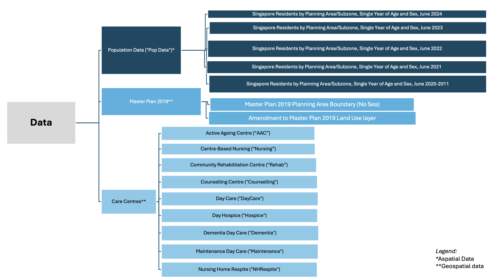

pacman::p_load(tidyverse, sf, httr,
jsonlite, rvest, units,
lubridate, tmap)
# - Creates a package list containing the necessary R packages
# - Checks if the R packages in the package list have been installed
# - If not installed, will install the missing packages & launch into R environment.Data Preview
1 Overview
In this section, we will acquire the data sets from various government open-sources data repository and websites. Thereafter, we will install the necessary R packages and import the data sets. In each data set, we will delve into the necessary checks, issues faced and steps into resolving the issue. Thereafter, exploratory data analysis is done on a micro and macro level.
2 Data Acquisition
In this research, 3 main spectrum of data will be required for this research, namely the Population Data, Master Plan 2019 Subzone boundary and Care Centres. These datasets are gathered from multiple open-source websites which includes Singapore Department of Statistics, Data.gov, and Agency of Integrated Care.

2.0.1 Singapore Master Plan 2019 Subzone Boundary
The Singapore Master Plan 2019 Planning Subzone Boundary is a ESRI shapefile that is obtained from Data.gov.sg.
2.0.2 Population Data
The Singapore Resident by Planning Area/Subzone, Single Year of Age and Sex, June 2024 is selected for this
As the verison January 2025 will be not be ready in due time for this research project, thus, the version of June 2024 is used.
2.0.3 WebScraping of Care Centres
Due to the lack of a centralised data of all care centres, web scarping is warranted in obtaining the information of the care centres. The geographical locations of the Care Centres alongside the centre names such as Active Ageing Centre, Day Care, Community Rehabilitation Centre, Centre-based Nursing were extracted using a web scraping tool, Web Scraper, available in Chrome web store as Seen in Figure x. As there is no centralised file that consist of the centre names and their locations, the location of each centre has to be manually extracted from the Care Services webpage of the Agency of Integrated Care as seen in Figure x.
2.0.3.1 Step 0: Download Web Scraper from Chrome web store
Web Scraper is used as it is free, works reasonably well and available in both Chrome and Firefox web store. In the below steps, Chrome will be the default web browser used.

2.0.3.2 Step 1: Navigate to Developer Tools in Chrome Web Browser
After downloading the extension from Chrome Web Store, press onto the menu bar at the right of the browser and locate Developer Tools while onto the website you would like to scrape information from.

2.0.3.3 Step 2: Interface for Webscraper
After clicking onto Developer Tools, click onto the Web Scraper in the menu bar (in black). Following which the below interface will appear.

2.0.3.4 Step 3: Create New Sitemap
Click onto “create new sitemap”, thereafter “Create Sitemap”. Sitemap Name will be the overarching term used for these information; in this instance, it will be AAC. The Start URL will be the HTML link that you would like the information to be scraped from.

2.0.3.5 Step 4: Add New Selector
After creating a new sitemap, the following interface will appear. Click onto the “Add new selector” to select the information to scrape.
2.0.3.6 Step 5: Selecting Whole Box
Firstly, the id will be the column name. For Type, select Element Attribute from the drop down selection. Thereafter, press on Select under Selector and select two boxes of each centre as seen in the figure below (the remaining boxes will be highlighted through its intelligent function) and press onto Done Selecting in the green box.

2.0.3.7 Step 6: Sitemap Interface
After adding a new selector, the sitemap page will appear the selector that you’ve inputted.
2.0.3.8 Step 7: Selecting Name of Care Centre
Firstly, the id will be name (with reference to the name of care centre), serving as the column name. Text will be chosen under Type thereafter press Select under Selector and highlight the first 2 names of the care centres (The remaining care centres will be highlighted through its intelligent function) and press onto Done selecting in the green box. Multiple box will be selected as we would like to scrap multiple names and root parent selector will be root and press onto Save Selector.

2.0.3.9 Step 8: Create New Sitemap
A popup window will be prompted and Group selectors was selected.
2.0.3.10 Step 9: Selecting Address of Care Centre
Similar to Step 7, the id will be address. Text will be chosen under Type thereafter press Select under Selector and highlight the first 2 addresses of the care centres (Remaining addresses will be highlighted through its intelligent function) and press onto Done selecting in the green box. Multiple box will be selected as we would like to scrap multiple addresses and parent selector will be wrapper_for_main_name (as we grouped selectors in step 8) and press onto Save Selector.
2.0.3.11 Step 10: Data Preview
Prior to data scraping, the data is previewed in ensuring each name of the care centre is correctly tagged to the address using the main website to verify.

2.0.3.12 Step 11: Commence Scraping
Head over to sitemap aac and click onto Scrape. A new browser will appear indicating that it is in process of scraping. It will be closed automatically once the process has ended.

2.0.3.13 Step 11: Export Data
Export data is selected upon clicking sitemap aac. 2 file options are offered: csv and xlsx. The former was chosen as CSV files are simple and portable which doesn’t complicate data processing. Thereafter the data will be downloaded.

2.0.3.14 Step 11: View CSV File
In ensuring the web scraping successful and accurate, the csv. file is opened and viewed.
The above steps were repeated for each care centre. All of the Care Centre data was extracted on 7th February 2025.
2.1 Installing Packages
The code chunk below, using p_load function of the pacman package, ensures that packages required are installed and loaded in R.
2.2 Geospatial Data
2.2.1 Importing Singapore’s Master Plan 2019 Subzone Boundary
mpsz = st_read(dsn = "data/subzone/",
layer = "MP14_SUBZONE_NO_SEA_PL")plot(mpsz)2.3 Care Centre (EXTRACT TRANSFORM LOAD)
aac <- read_csv("data/carecentre/activeageingcentre.csv")counselling <- read_csv("data/carecentre/counselling.csv")daycare <- read_csv("data/carecentre/daycare.csv")dementia <- read_csv("data/carecentre/dementiadaycare.csv")hospice <- read_csv("data/carecentre/dayhospice.csv")maintenance <- read_csv("data/carecentre/maintenancedaycare.csv")nhrespite <- read_csv("data/carecentre/nhrespite.csv")nursing <- read_csv("data/carecentre/centrebasednursing.csv")rehab <- read_csv("data/carecentre/communityrehabcentre.csv")2.3.1 Cursory View
Using the glimpse() function, we are able to see that various rows in each data set while sharing the same number of columns. Columns “web-scraper-order” and “web-scraper-start-url” are redundant, thus, will be removed. Additionally, the address includes the postal code and it will seperated from the main street name and block number to facilitate the geospatial mapping thereafter.
glimpse(aac)2.3.2 Deleting Unwanted Codes
The following R code is used to remove the columns “web-scraper-order” and “web-scraper-start-url” from multiple datasets: The select() function from the dplyr package is used to select or remove columns from a data frame.
aac <- aac %>% select(-"web-scraper-order", -"web-scraper-start-url")
counselling <- counselling %>% select(-"web-scraper-order", -"web-scraper-start-url")
daycare <- daycare %>% select(-"web-scraper-order", -"web-scraper-start-url")
dementia <- dementia %>% select(-"web-scraper-order", -"web-scraper-start-url")
hospice <- hospice %>% select(-"web-scraper-order", -"web-scraper-start-url")
maintenance <- maintenance %>% select(-"web-scraper-order", -"web-scraper-start-url")
nhrespite <- nhrespite %>% select(-"web-scraper-order", -"web-scraper-start-url")
nursing <- nursing %>% select(-"web-scraper-order", -"web-scraper-start-url")
rehab <- rehab %>% select(-"web-scraper-order", -"web-scraper-start-url")After removing the two columns, each data set has two columns, namely name and address only.
glimpse(aac)2.3.3 Checking for Missing Values
To check for missing or null values in the name and address columns of each dataset, the code uses the summarise() function from the dplyr package. The summarise() function computes summary statistics for the specified columns, which in this case are name and address. The across() function is used to apply the sum(is.na(.)) operation to both columns simultaneously, counting the number of missing (NA) values in each column.
The is.na() function checks whether each value in the name and address columns is missing or null, returning TRUE for missing values and FALSE for non-missing values. The sum() function then counts the number of TRUE values, which corresponds to the number of missing values in each column. This process is applied to each dataset (aac, counselling, daycare, dementia, hospice, maintenance, nhrespite, nursing, and rehab). In conclusion it is able to identify the number of missing values in the name and address columns across all datasets, which helps assess the completeness of the data and highlights any issues that may require cleaning or imputation before further analysis. It returns 0 missing values.
# Checking for missing or null values in 'name' and 'address' columns
aac_missing <- aac %>% summarise(across(c(name, address), ~sum(is.na(.))))
counselling_missing <- counselling %>% summarise(across(c(name, address), ~sum(is.na(.))))
daycare_missing <- daycare %>% summarise(across(c(name, address), ~sum(is.na(.))))
dementia_missing <- dementia %>% summarise(across(c(name, address), ~sum(is.na(.))))
hospice_missing <- hospice %>% summarise(across(c(name, address), ~sum(is.na(.))))
maintenance_missing <- maintenance %>% summarise(across(c(name, address), ~sum(is.na(.))))
nhrespite_missing <- nhrespite %>% summarise(across(c(name, address), ~sum(is.na(.))))
nursing_missing <- nursing %>% summarise(across(c(name, address), ~sum(is.na(.))))
rehab_missing <- rehab %>% summarise(across(c(name, address), ~sum(is.na(.))))2.3.4 Duplicate Check
The code provided checks for duplicate rows in each dataset (aac, counselling, daycare, dementia, hospice, maintenance, nhrespite, nursing, and rehab) by grouping the dataset by all columns using group_by_all(). It then filters out the rows that have duplicate combinations of values across all columns using filter(n() > 1). The n() function counts the number of occurrences for each combination of values, and filter(n() > 1) keeps only the rows that appear more than once (i.e., duplicates).
For each dataset, the nrow() function is used to check if there are any rows returned after filtering for duplicates. If there are duplicates (i.e., the number of rows is greater than zero), the dataset with the duplicate rows is returned. However, if no duplicates are found (i.e., nrow() equals zero), the code returns 0 to indicate that there are no duplicates in that dataset.
Thus, the code either returns the rows with duplicate values or 0 if no duplicates are present, providing an indication of whether duplicate entries exist in each dataset.
# Check for duplicates in 'aac'
aac_duplicate <- aac %>%
group_by_all() %>%
filter(n() > 1) %>%
ungroup()
# Check for duplicates in 'counselling'
counselling_duplicate <- counselling %>%
group_by_all() %>%
filter(n() > 1) %>%
ungroup()
# Check for duplicates in 'daycare'
daycare_duplicate <- daycare %>%
group_by_all() %>%
filter(n() > 1) %>%
ungroup()
# Check for duplicates in 'dementia'
dementia_duplicate <- dementia %>%
group_by_all() %>%
filter(n() > 1) %>%
ungroup()
# Check for duplicates in 'hospice'
hospice_duplicate <- hospice %>%
group_by_all() %>%
filter(n() > 1) %>%
ungroup()
# Check for duplicates in 'maintenance'
maintenance_duplicate <- maintenance %>%
group_by_all() %>%
filter(n() > 1) %>%
ungroup()
# Check for duplicates in 'nhrespite'
nhrespite_duplicate <- nhrespite %>%
group_by_all() %>%
filter(n() > 1) %>%
ungroup()
# Check for duplicates in 'nursing'
nursing_duplicate <- nursing %>%
group_by_all() %>%
filter(n() > 1) %>%
ungroup()
# Check for duplicates in 'rehab'
rehab_duplicate <- rehab %>%
group_by_all() %>%
filter(n() > 1) %>%
ungroup()2.4 Data Manipulation (CC)
2.4.1 Seperating postal code from address
The code uses the mutate() function to extract the postal code (last 6 digits) from the address column of the individual dataset and store it in a new column called postal_code. The postal code is then removed from the address column.
# Active Ageing Centre
aac <-mutate(aac,
postal_code = str_extract(address, "[0-9]{6}$"), # Extract postal code
address = str_remove(address, "[,]?\\s*[0-9]{6}$") # Remove postal code from address
)# Counselling
counselling <- mutate(counselling,
postal_code = str_extract(address, "[0-9]{6}$"),
address = str_remove(address, "[,]?\\s*[0-9]{6}$")
)# Daycare
daycare <- mutate(daycare,
postal_code = str_extract(address, "[0-9]{6}$"),
address = str_remove(address, "[,]?\\s*[0-9]{6}$")
)# Dementia
dementia <- mutate(dementia,
postal_code = str_extract(address, "[0-9]{6}$"),
address = str_remove(address, "[,]?\\s*[0-9]{6}$")
)# Day Hospice
hospice <- mutate(hospice,
postal_code = str_extract(address, "[0-9]{6}$"),
address = str_remove(address, "[,]?\\s*[0-9]{6}$")
)# Maintenance Daycare
maintenance <- mutate(maintenance,
postal_code = str_extract(address, "[0-9]{6}$"),
address = str_remove(address, "[,]?\\s*[0-9]{6}$")
)# NH Respite
nhrespite <- mutate(nhrespite,
postal_code = str_extract(address, "[0-9]{6}$"),
address = str_remove(address, "[,]?\\s*[0-9]{6}$")
)# Centre Based Nursing
nursing <- mutate(nursing,
postal_code = str_extract(address, "[0-9]{6}$"),
address = str_remove(address, "[,]?\\s*[0-9]{6}$")
)# Community Rehab Centre
rehab <- mutate(rehab,
postal_code = str_extract(address, "[0-9]{6}$"),
address = str_remove(address, "[,]?\\s*[0-9]{6}$")
)# Checking for missing or null values in 'name' and 'address' columns
aac_missing <- aac %>% summarise(across(c(name, address, postal_code), ~sum(is.na(.))))
counselling_missing <- counselling %>% summarise(across(c(name, address, postal_code), ~sum(is.na(.))))
daycare_missing <- daycare %>% summarise(across(c(name, address, postal_code), ~sum(is.na(.))))
dementia_missing <- dementia %>% summarise(across(c(name, address, postal_code), ~sum(is.na(.))))
hospice_missing <- hospice %>% summarise(across(c(name, address, postal_code),~sum(is.na(.))))
maintenance_missing <- maintenance %>% summarise(across(c(name, address, postal_code), ~sum(is.na(.))))
nhrespite_missing <- nhrespite %>% summarise(across(c(name, address, postal_code), ~sum(is.na(.))))
nursing_missing <- nursing %>% summarise(across(c(name, address, postal_code), ~sum(is.na(.))))
rehab_missing <- rehab %>% summarise(across(c(name, address, postal_code), ~sum(is.na(.))))2.4.2 Labelling each dataset appropriately
The below code chunk adds a column and naming it as “label” in relation to the name of the dataset. This is done so we are able to combine the dataset together and identify
aac <- aac %>%
mutate(label = "aac")counselling <- counselling %>%
mutate(label = "counselling")daycare <- daycare %>%
mutate(label = "daycare")dementia <- dementia %>%
mutate(label = "dementia")hospice <- hospice %>%
mutate(label = "hospice")maintenance <- maintenance %>%
mutate(label = "maintenance")nhrespite <- nhrespite %>%
mutate(label = "nhrespite")nursing <- nursing %>%
mutate(label = "nursing")rehab <- rehab %>%
mutate(label = "rehab")2.4.3 Append all Care Centres into one dataset
The code combines multiple datasets (aac, counselling, daycare, dementia, hospice, maintenance, nhrespite, nursing, and rehab) into a single dataset named c_data using the bind_rows() function. This function appends the rows of each dataset, stacking them vertically, to create one consolidated dataset. The resulting c_data will contain all the rows from the individual datasets, assuming they have the same column structure.
cc_data <- bind_rows(
aac,
counselling,
daycare,
dementia,
hospice,
maintenance,
nhrespite,
nursing,
rehab,
)2.4.4 USE THIS
If yes is 1, no returns 0.
pivoted_cc_data <- cc_data %>%
select(-address) %>%
mutate(present = 1) %>% # Create a column to indicate presence (1)
pivot_wider(
names_from = label, # Pivot based on the 'label' column
values_from = present,
values_fill = list(0)# Use the 'present' column for the values
)using arrange(0, we are able to see that that the centres are arranged in alphabetically order and they are similar ones.
arrange(pivoted_cc_data)pivoted_cc_data$name[duplicated(pivoted_cc_data$name)]duplicate_rows <- pivoted_cc_data %>%
# Count occurrences of each name
add_count(name) %>%
# Filter for names that appear more than once
filter(n > 1) %>%
# Remove the count column
select(-n) %>%
# Arrange by name for better readability
arrange(name)
if (nrow(duplicate_rows) > 0) {
print(duplicate_rows)
} else {
message("No duplicates found in the 'name' column.")
}2.4.5 Adding coordinates to care centre
????? dont need this since already got postal code
add_list <- sort(unique(pivoted_cc_data$postal_code)) #parse a list as API cannot read df
#unique reduces records to pass to portal
#sort is used to easier to find geo codesget_coords <- function(add_list){
# Create a data frame to store all retrieved coordinates
postal_coords <- data.frame()
for (i in add_list){
r <- GET('https://www.onemap.gov.sg/api/common/elastic/search?',
query=list(searchVal=i,
returnGeom='Y',
getAddrDetails='Y'))
data <- fromJSON(rawToChar(r$content))
found <- data$found
res <- data$results
# Create a new data frame for each address
new_row <- data.frame()
# If single result, append
if (found == 1){
postal <- res$POSTAL
lat <- res$LATITUDE
lng <- res$LONGITUDE
new_row <- data.frame(address = i,
postal = postal,
latitude_wgs84 = lat, # renamed to clarify coordinate system
longitude_wgs84 = lng) # renamed to clarify coordinate system
}
# If multiple results, drop NIL and append top 1
else if (found > 1){
# Remove those with NIL as postal
res_sub <- res[res$POSTAL != "NIL", ]
# Set as NA first if no Postal
if (nrow(res_sub) == 0) {
new_row <- data.frame(address = i,
postal = NA,
latitude_wgs84 = NA,
longitude_wgs84 = NA)
}
else{
top1 <- head(res_sub, n = 1)
postal <- top1$POSTAL
lat <- top1$LATITUDE
lng <- top1$LONGITUDE
new_row <- data.frame(address = i,
postal = postal,
latitude_wgs84 = lat,
longitude_wgs84 = lng)
}
}
else {
new_row <- data.frame(address = i,
postal = NA,
latitude_wgs84 = NA,
longitude_wgs84 = NA)
}
# Add the row
postal_coords <- rbind(postal_coords, new_row)
}
# Convert to sf object with WGS84 coordinates (EPSG:4326)
# Filter out rows with NA coordinates first
valid_coords <- postal_coords[!is.na(postal_coords$latitude_wgs84) &
!is.na(postal_coords$longitude_wgs84), ]
if(nrow(valid_coords) > 0) {
coords_sf <- st_as_sf(valid_coords,
coords = c("longitude_wgs84", "latitude_wgs84"),
crs = 4326)
# Transform to SVY21 (EPSG:3414)
coords_svy21 <- st_transform(coords_sf, 3414)
# Extract coordinates
coords_matrix <- st_coordinates(coords_svy21)
# Add SVY21 coordinates back to the original dataframe with desired column names
valid_coords$longitude <- coords_matrix[, 1] # SVY21 X coordinate as longitude
valid_coords$latitude <- coords_matrix[, 2] # SVY21 Y coordinate as latitude
# Merge back with rows that had NA coordinates
result <- merge(postal_coords, valid_coords[c("address", "longitude", "latitude")],
by = "address", all.x = TRUE)
} else {
# If no valid coordinates, add empty SVY21 columns
result <- postal_coords
result$longitude <- NA # SVY21 coordinates
result$latitude <- NA # SVY21 coordinates
}
return(result)
}coords <- get_coords(add_list)Left join is used to where both data sets share the same properties of postal code.
cc_data_final <- pivoted_cc_data %>%
left_join(coords,
join_by(postal_code == postal)
)2.5 Population Data
2.5.1 Importing Data
rename_with() of tidyverse package is used to perform column name standardisation by converting all variable names in the respective datasets to lowercase.
Singapore Residents by Planning Area / Subzone, Single Year of Age and Sex, June 2024
popdata24 <- read_csv("data/popdata/respopagesex2024.csv") %>%
rename_with(tolower)Singapore Residents by Planning Area / Subzone, Single Year of Age and Sex, June 2023
popdata23 <- read_csv("data/popdata/respopagesex2023.csv") %>%
rename_with(tolower)Singapore Residents by Planning Area / Subzone, Single Year of Age and Sex, June 2022
popdata22 <- read_csv("data/popdata/respopagesex2022.csv") %>%
rename_with(tolower)
PARSING ERROR*
Warning: One or more parsing issues, call `problems()` on your data frame for details, e.g.:
dat <- vroom(...)
problems(dat)Rows: 60424 Columns: 6── Column specificationSingapore Residents by Planning Area / Subzone, Single Year of Age and Sex, June 2021
popdata21 <- read_csv("data/popdata/respopagesex2021.csv") %>%
rename_with(tolower)Singapore Residents by Planning Area / Subzone, Single Year of Age and Sex, June 2011-2020
popdata20 <- read_csv("data/popdata/respopagesex2011to2020.csv") %>%
rename_with(tolower) %>%
filter(time == 2020)glimpse(popdata23)2.5.2 Checking for Missing Values
To check for missing or null values in the name and address columns of each dataset, the code uses the summarise() function from the dplyr package. The summarise() function computes summary statistics for the specified columns, which in this case are name and address. The across() function is used to apply the sum(is.na(.)) operation to both columns simultaneously, counting the number of missing (NA) values in each column.
The is.na() function checks whether each value in the name and address columns is missing or null, returning TRUE for missing values and FALSE for non-missing values. The sum() function then counts the number of TRUE values, which corresponds to the number of missing values in each column. This process is applied to each dataset (aac, counselling, daycare, dementia, hospice, maintenance, nhrespite, nursing, and rehab). In conclusion it is able to identify the number of missing values in the name and address columns across all datasets, which helps assess the completeness of the data and highlights any issues that may require cleaning or imputation before further analysis. It returns 0 missing values.
Results: We noticed that there are 30 missing values popdata22 specifically under the column pop.
popdata20_missing <- popdata20 %>% summarise(across(c(pa,sz,age,sex,pop,time), ~sum(is.na(.))))
print(popdata20_missing)
popdata21_missing <- popdata21 %>% summarise(across(c(pa,sz,age,sex,pop,time), ~sum(is.na(.))))
print(popdata21_missing)
popdata22_missing <- popdata22 %>% summarise(across(c(pa,sz,age,sex,pop,time), ~sum(is.na(.))))
print(popdata22_missing)
popdata23_missing <- popdata23 %>% summarise(across(c(pa,sz,age,sex,pop,time), ~sum(is.na(.))))
print(popdata23_missing)
popdata24_missing <- popdata24 %>% summarise(across(c(pa,sz,age,sex,pop,time), ~sum(is.na(.))))
print(popdata24_missing)2.5.3 Issue with POPDATA22
Using the below code, we are able to see clearly the rows that are affected and in the pop column, it appears as NA. The csv file (respopagesex2022.csv) was opened using excel and each row returned in the below output was then cross checked in excel. Whole numbers with comma appeared in excel. This may be because read_csv() function expects a numeric value (double) in one of the columns, but instead, it found a string (the values in the column are likely formatted with commas, such as “1,020”). This is why the parser is raising an issue earlier on.
na_rows <- popdata22[is.na(popdata22$pop), ]
print(na_rows)Referencing from Stackoverflow, the first line of the code is necessary as it defines a new class called "num.with.commas". This class is intended to handle numeric values that are stored as strings with commas (e.g., "1,000"). Thereafter, the second line of the code defines a method to convert a character type to the custom "num.with.commas" class.
The
gsub(",", "", from)function removes commas from the string (e.g.,"1,000"becomes"1000")The
as.numeric()function then converts the cleaned string into a numeric value (e.g.,"1000"becomes1000)
This ensures that numbers with commas are properly converted to numeric values during data import.
setClass("num.with.commas")
setAs("character", "num.with.commas",
function(from) as.numeric(gsub(",", "", from) ) )The file is then re-imported again and specifically, the column ‘pop’ is parsed as a character field in facilitating the next step in removing commas within the population itself.
popdata22 <- read_csv("data/popdata/respopagesex2022.csv",
col_types = cols(
PA = col_character(),
SZ = col_character(),
Age = col_character(),
Sex = col_character(),
Pop = col_character(),
Time = col_number() # Adjust if necessary
)) %>%
rename_with(tolower)As previously stated, commas are present in the ‘pop’ column, hence, mutate()
popdata22 <- popdata22 %>%
mutate(pop = as.numeric(str_replace_all(pop, ",", "")))In the below, we’ve verified that there is no missing values and the above steps taken were successful.
names(popdata22) <- tolower(names(popdata22))
popdata22_missing <- popdata22 %>% summarise(across(c(pa,sz,age,sex,pop,time), ~sum(is.na(.))))
print(popdata22_missing)However, upon running the below cod
#First
convert_age <- function(df) {
df %>%
mutate(age = if_else(
age == "90_and_over", "90", age)) %>%
mutate(age = as.numeric(age))
}
popdata20_c <- convert_age(popdata23)In the below code chunk a & b, we noticed that it returned two different outputs: 90_and_over and 90_and_Over. This may explain why the error NAs introduced by coercion was returned. Code-chunk a.
popdata22 %>%
summarise(max_age = max(age, na.rm = TRUE))Code chunk b.
popdata24 %>%
summarise(max_age = max(age, na.rm = TRUE))Hence, in addressing the above issue, the below code chunk was developed. First, The code defines a function called convert_age that takes a dataframe (df) as input. Inside the function, it modifies the age column using mutate(). It checks each value in the age column to see if it contains either “_and_over” or “_and_Over” (case-insensitive match). When a match is found, it extracts just the numeric part (e.g., “90” from “90_and_over”) using str_extract(). If no match is found, it keeps the original value. The second mutate() converts the cleaned age column to numeric values, ensuring all ages are stored as numbers. The function returns the modified dataframe with standardised age values.
convert_age <- function(df) {
df %>%
mutate(age = if_else(
str_detect(age, regex("_and_Over|_and_over", ignore_case = TRUE)),
str_extract(age, "\\d+"), # Extract just the numeric part
age
)) %>%
mutate(age = as.numeric(age))
}popdata20_c <- convert_age(popdata20)popdata21_c <- convert_age(popdata21)popdata22_c <- convert_age(popdata22)popdata23_c <- convert_age(popdata23)popdata24_c <- convert_age(popdata24)Another layer of confirmation of missing values was executed in ensuring no missing values were returned during the abovementioned process and it returns 0 for each dataset.
popdata20_missing <- popdata20_c %>% summarise(across(c(pa,sz,age,sex,pop,time), ~sum(is.na(.))))
print(popdata20_missing)
popdata21_missing <- popdata21_c %>% summarise(across(c(pa,sz,age,sex,pop,time), ~sum(is.na(.))))
print(popdata21_missing)
popdata22_missing <- popdata22_c %>% summarise(across(c(pa,sz,age,sex,pop,time), ~sum(is.na(.))))
print(popdata22_missing)
popdata23_missing <- popdata23_c %>% summarise(across(c(pa,sz,age,sex,pop,time), ~sum(is.na(.))))
print(popdata23_missing)
popdata24_missing <- popdata24_c %>% summarise(across(c(pa,sz,age,sex,pop,time), ~sum(is.na(.))))
print(popdata24_missing)2.5.4 Remove
# Return all rows where 'pop' is exactly 0
popdata24_c %>%
filter(age>=60, pop==0)popdata23_c %>%
filter(age>=60, pop==0)popdata22_c %>%
filter(age>=60, pop==0)popdata21_c %>%
filter(age>=60, pop==0)popdata20_c %>%
filter(age>=60, pop==0)2.5.5 Duplicate Check
The code provided checks for duplicate rows in each dataset by grouping the dataset by all columns using group_by_all(). It then filters out the rows that have duplicate combinations of values across all columns using filter(n() > 1). The n() function counts the number of occurrences for each combination of values, and filter(n() > 1) keeps only the rows that appear more than once (i.e., duplicates).
For each dataset, the nrow() function is used to check if there are any rows returned after filtering for duplicates. If there are duplicates (i.e., the number of rows is greater than zero), the dataset with the duplicate rows is returned. However, if no duplicates are found (i.e., nrow() equals zero), the code returns 0 to indicate that there are no duplicates in that dataset.
Thus, the code either returns the rows with duplicate values or 0 if no duplicates are present, providing an indication of whether duplicate entries exist in each dataset.
# Check for duplicates in 'aac'
popdata20_duplicate <- popdata20_c %>%
group_by_all() %>%
filter(n() > 1) %>%
ungroup()
show(popdata20_duplicate)
# Check for duplicates in 'counselling'
popdata21_duplicate <- popdata21_c %>%
group_by_all() %>%
filter(n() > 1) %>%
ungroup()
show(popdata21_duplicate)
# Check for duplicates in 'daycare'
popdata22_duplicate <- popdata22_c %>%
group_by_all() %>%
filter(n() > 1) %>%
ungroup()
show(popdata22_duplicate)
# Check for duplicates in 'dementia'
popdata23_duplicate <- popdata23_c %>%
group_by_all() %>%
filter(n() > 1) %>%
ungroup()
show(popdata23_duplicate)
# Check for duplicates in 'hospice'
popdata24_duplicate <- popdata24_c %>%
group_by_all() %>%
filter(n() > 1) %>%
ungroup()
show(popdata24_duplicate)2.6 PROF
#Population Data
clean_age_column <- function(df) {
df %>%
mutate(
age = str_trim(age), # Trim whitespace
age = if_else(age == "90_and_over", "90", age), # Replace label
age = suppressWarnings(as.numeric(age)) # Convert safely
) %>%
filter(!is.na(age)) # Remove rows that still couldn't be converted
}3 Step 1: Load data
pop20 <- read_rds("data/rds/popdata/refined/popdata20_c.rds") %>%
clean_age_column()
pop21 <- read_rds("data/rds/popdata/refined/popdata21_c.rds") %>%
clean_age_column()
pop22 <- read_rds("data/rds/popdata/refined/popdata22_c.rds") %>%
clean_age_column()
pop23 <- read_rds("data/rds/popdata/refined/popdata23_c.rds") %>%
clean_age_column()
pop24 <- read_rds("data/rds/popdata/refined/popdata24_c.rds") %>%
clean_age_column()4 Step 2: Compute survival rates for each year-to-year transition
compute_survival_rate <- function(df1, df2) {
df1 %>%
filter(age >= 64 & age < 91) %>%
mutate(age = age + 1) %>%
inner_join(df2,
by = c("age", "sex", "pa", "sz"),
suffix = c("_prev", "_next")) %>%
mutate(rate = pop_next / pop_prev) %>%
select(pa, sz, age, sex, rate)
}rates_2020_2021 <- compute_survival_rate(popdata20_c, popdata21_c)rates_2021_2022 <- compute_survival_rate(pop21, popdata22)rates_2022_2023 <- compute_survival_rate(popdata22, pop23)rates_2023_2024 <- compute_survival_rate(pop23, pop24)5 Step 3: Average the survival rates
avg_survival_rates <- bind_rows(
rates_2020_2021,
rates_2021_2022,
rates_2022_2023,
rates_2023_2024
) %>%
group_by(age, sex, pa, sz) %>%
summarise(avg_rate = mean(rate, na.rm = TRUE), .groups = "drop")6 Step 4: Forecast each year 2025 to 2029
forecast_year <- function(base_pop, rates, year) {
next_pop <- base_pop %>%
filter(age >= 64 & age < 90) %>%
mutate(age = age + 1) %>%
left_join(rates, by = c("age", "sex", "pa", "sz")) %>%
mutate(pop = pop * avg_rate) %>%
select(age, sex, pa, sz, pop)
# Handle 90+
age_89 <- base_pop %>%
filter(age == 89) %>%
select(sex, pa, sz, pop) %>%
mutate(age = 90)
age_90plus <- base_pop %>%
filter(age == 90) %>%
select(sex, pa, sz, pop)
pop_90 <- bind_rows(age_89, age_90plus) %>%
group_by(sex, pa, sz) %>%
summarise(age = 90, pop = sum(pop), .groups = "drop")
bind_rows(next_pop, pop_90) %>%
mutate(year = year) %>%
arrange(pa, sz, sex, age)
}7 Step 5: Loop over the years
# List to store forecasts
forecast_list <- list()
base_pop <- pop24
for (y in 2025:2029) {
next_forecast <- forecast_year(base_pop, avg_survival_rates, y)
forecast_list[[as.character(y)]] <- next_forecast
base_pop <- next_forecast %>% select(pa, sz, age, sex, pop)
}8 Final Output
all_forecasts <- bind_rows(forecast_list)9 Exploratory Data Analysis
tmap_mode("view")
tm_shape(mpsz) +
tm_polygons() +
tm_shape(CHAS) +
tm_dots()10 References
Tan, K. (2023). Take-home Exercise 1: Geospatial Analytics for Public Good. Retrieved from https://isss624-kytjy.netlify.app/take-home_ex/take-home_ex1/the1#background
Urban Redevelopment Authority. (2023). Master Plan 2019 Planning Area Boundary (No Sea) (2024) [Dataset]. data.gov.sg. Retrieved February 23, 2025 from https://data.gov.sg/datasets/d_6c6d7361dd826d97b91bac914ca6b2ac/view